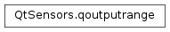

qoutputrange¶
Detailed Description¶
The qoutputrange class holds the specifics of an output range.
The class is defined as a simple struct.
struct qoutputrange { qreal maximum; qreal minimum; qreal accuracy; };Each output range specifies a minimum and maximum value as well as an accuracy value. The accuracy value represents the resolution of the sensor. It is the smallest change the sensor can detect and is expressed using the same units as the minimum and maximum.
Sensors must often trade off range for accuracy. To allow the user to determine which of these are more important the sensor may offer several output ranges. One output range may have reduced minimum and maximum values and increased sensitivity. Another output range may have higher minimum and maximum values with reduced sensitivity. Note that higher sensitivities will be represented by smaller accuracy values.
An example of this tradeoff can be seen by examining the LIS302DL accelerometer. It has only 256 possible values to report with. These values are scaled so that they can represent either -2G to +2G (with an accuracy value of 0.015G) or -8G to +8G (with an accuracy value of 0.06G).
See also
qoutputrangelistQSensor.outputRanges
-
class
PySide2.QtSensors.qoutputrange¶ -
class
PySide2.QtSensors.qoutputrange(qoutputrange) Parameters: qoutputrange – PySide2.QtSensors.qoutputrange
-
PySide2.QtSensors.qoutputrange.minimum¶
-
PySide2.QtSensors.qoutputrange.maximum¶
-
PySide2.QtSensors.qoutputrange.accuracy¶
© 2018 The Qt Company Ltd. Documentation contributions included herein are the copyrights of their respective owners. The documentation provided herein is licensed under the terms of the GNU Free Documentation License version 1.3 as published by the Free Software Foundation. Qt and respective logos are trademarks of The Qt Company Ltd. in Finland and/or other countries worldwide. All other trademarks are property of their respective owners.